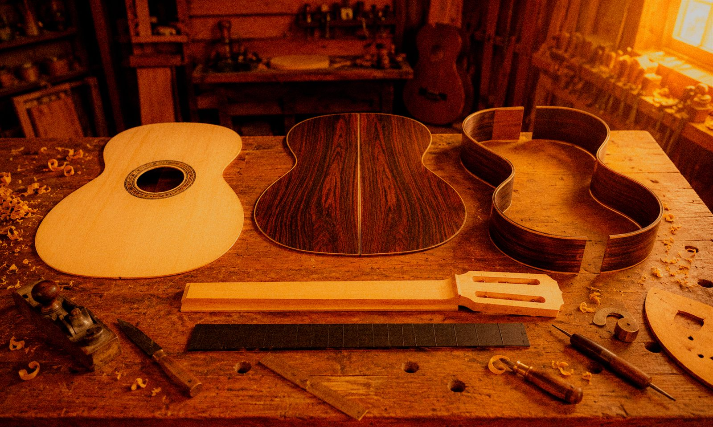
tocá para girar ↻
← Academia de luthería
Academia · Curso 01
Construcción de
Construcción de
Guitarra Criolla.
Construí tu propia guitarra clásica de concierto en 3 meses y 13 clases individuales con el maestro luthier — desde la física de la madera hasta el barniz a muñequilla.
USD 750Inversión total
del curso
BásicoNivel principiante
3 meses13 clases
1 a 1100% individual
PresencialTaller
De admirar una guitarra
a
firmar la tuya.
Hoy
Comprás instrumentos producidos en serie, diseñados para todos.
Al terminar
Te llevás una guitarra hecha por vos y el conocimiento para construir muchas más.
02 / ¿Es para vos?
Este curso es
Este curso es
para vos si...
Tocá cada tarjeta para girarla.
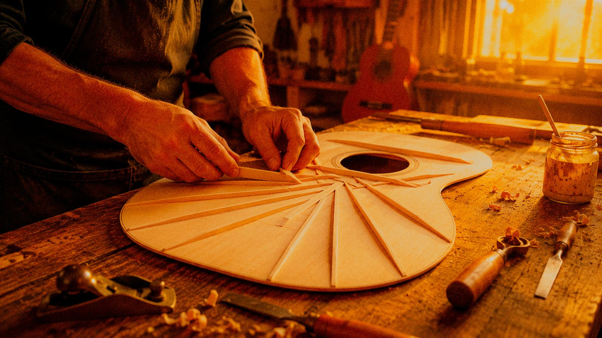
tocá para girar ↻Querés entender cómo nace el sonido
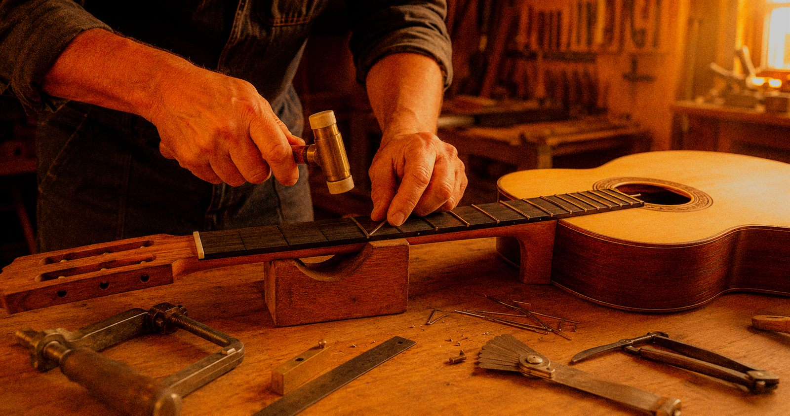
tocá para girar ↻Querés aprender un oficio artesanal
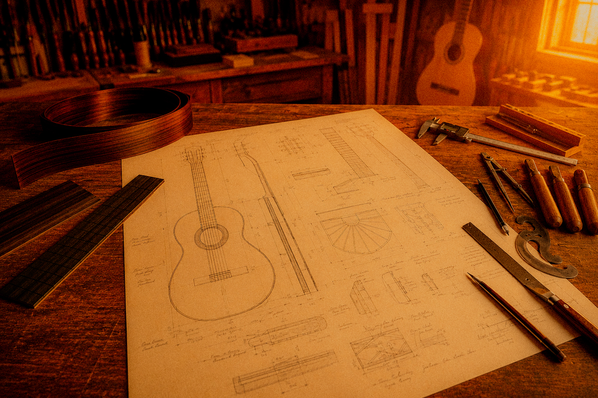
tocá para girar ↻Querés convertir tu pasión en un oficio
03 / El temario
13 clases. Un
13 clases. Un
instrumento único.
Cinco fases, trece encuentros individuales. Cada clase avanza una etapa real de la construcción: al final del programa, tu guitarra está terminada y suena.
- 01
Reunión 1 a 1 con el maestro luthier para definir tus objetivos y diseñar cada detalle del instrumento.
- 02
Análisis de la densidad, elasticidad y velocidad de vibración que determinan la respuesta acústica de la madera.
- 03
Selección de la madera según su corte, curado y respuesta acústica. Prueba de tap tone para elegir tu tapa armónica.
- 04
Definición de las dimensiones del instrumento y preparación de la solera (estructura guía durante el proceso de construcción).
- 05
Labrado de la tapa; calibración del espesor de la tapa para obtener la respuesta acústica deseada.
- 06
Tallado y encolado el abanico armónico que define la proyección del instrumento.
- 07
Doblado de aros a fuego y cierre de la caja armónica sobre la solera.
- 08
Tallado del mástil y definición de un perfil ergonómico.
- 09
Encaje y unión entre cuerpo y mástil con cola de milano.
- 10
Colocación del diapasón, trastes, cejuela y puente.
- 11
Calibración de la entonación, la acción y el equilibrio tonal del instrumento.
- 12
Aplicación de barniz de goma laca mediante la técnica tradicional a muñequilla.
- 13
Pulido final, encordado y prueba acústica. Tu guitarra, terminada.
04 / Qué incluye
Todo incluido.
Todo incluido.
Vos ponés las ganas de crear.
- Todas las maderas y materiales incluidos.
- Uso de herramientas profesionales del taller.
- Acompañamiento personalizado durante todo el curso.
- Construcción completa de una guitarra desde cero.
- Calibración y ajuste final del instrumento.
- Certificado de finalización.
- Tu guitarra terminada y firmada por vos.
- Acceso a consultas posteriores al curso.
Y no solo eso...
Junto con tu guitarra, recibís todo lo necesario para cuidarla y comenzar a disfrutarla.
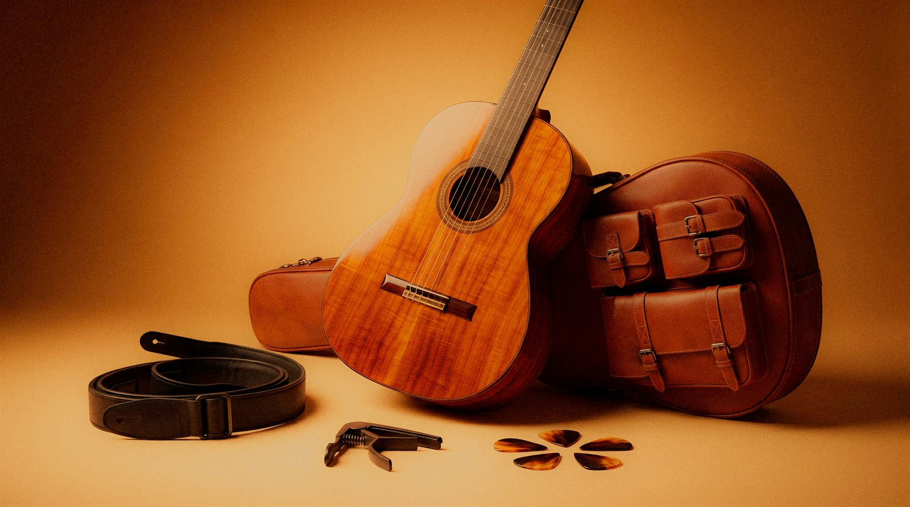
05 / Metodología
Uno a uno.
Uno a uno.
Sin atajos.
Nada de aulas numerosas. Cada clase es un encuentro privado entre vos y el maestro luthier, en el taller real donde nacen los instrumentos de autor.
- Ritmo propio. Avanzás a tu velocidad; nadie te apura ni te frena.
- Atención exclusiva. El maestro trabaja únicamente con vos.
- Feedback permanente. Cada decisión se corrige en el momento.
06 / Herramientas profesionales
Familiarizate con
Familiarizate con
las
herramientas
del oficio.
Cada herramienta tiene un propósito dentro del proceso de construcción. Durante el curso aprenderás a utilizarlas con precisión para transformar la madera en un instrumento.
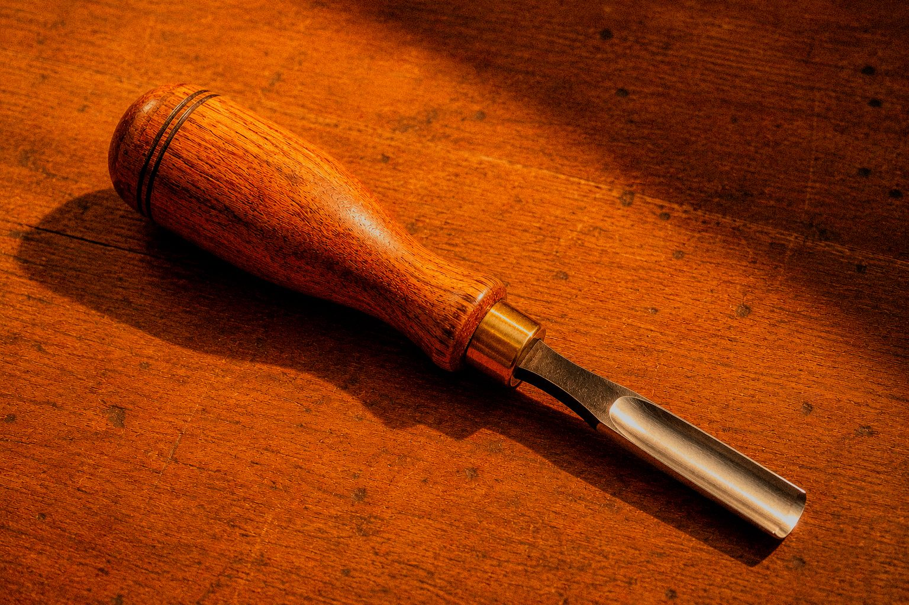
Tallado
Gubia
Tallado preciso de piezas de madera.
ESC. 1:4 · f₀ 110 Hz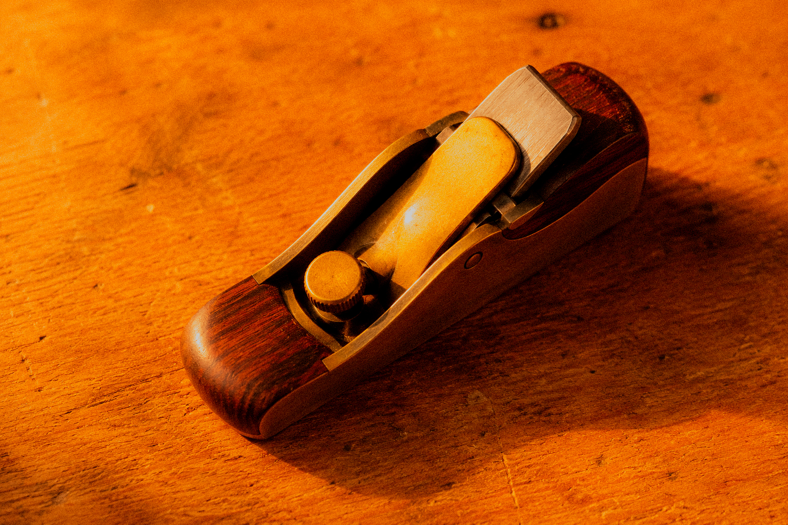
Calibrado
Cepillo de luthier
Ajuste de espesores y superficies.
ESC. 1:4 · f₀ 110 Hz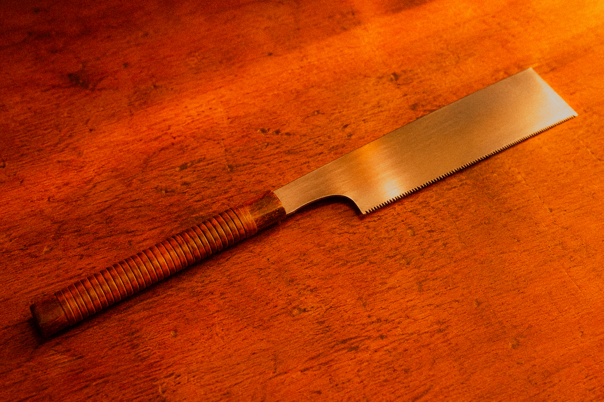
Corte
Sierra japonesa
Cortes limpios y de alta precisión.
ESC. 1:4 · f₀ 110 Hz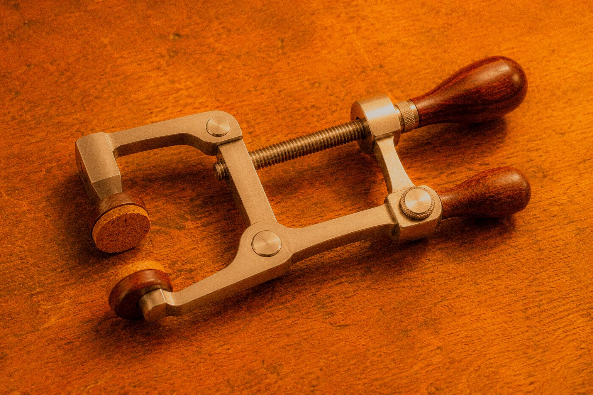
Sujeción
Sargentos de encolado
Sujeción de las piezas durante el pegado.
ESC. 1:4 · f₀ 110 Hz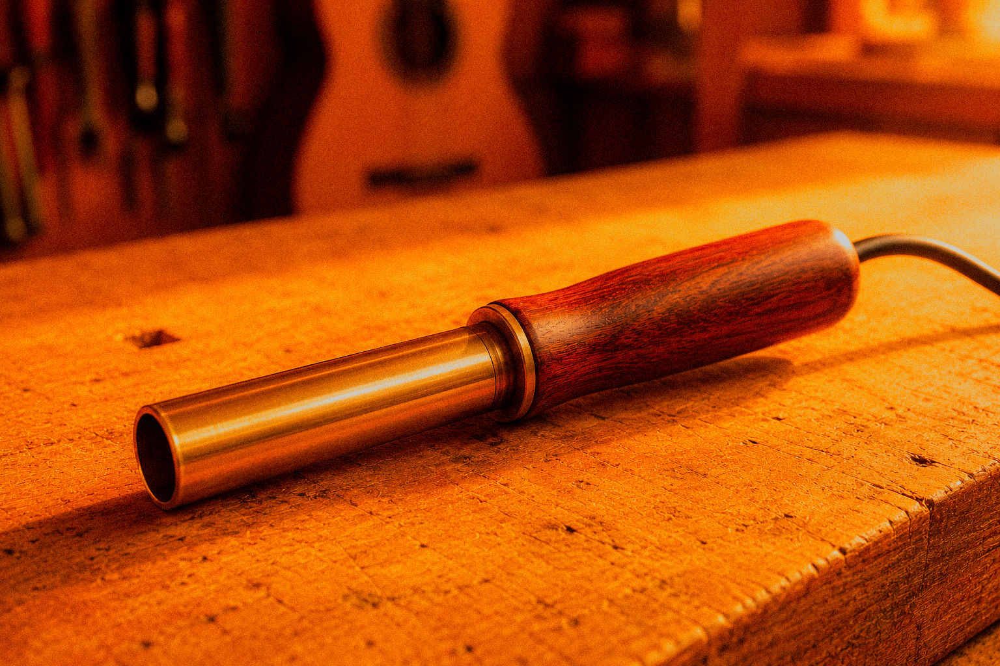
Curvado
Doblador de aros
Curvado de los aros mediante calor.
ESC. 1:4 · f₀ 110 Hz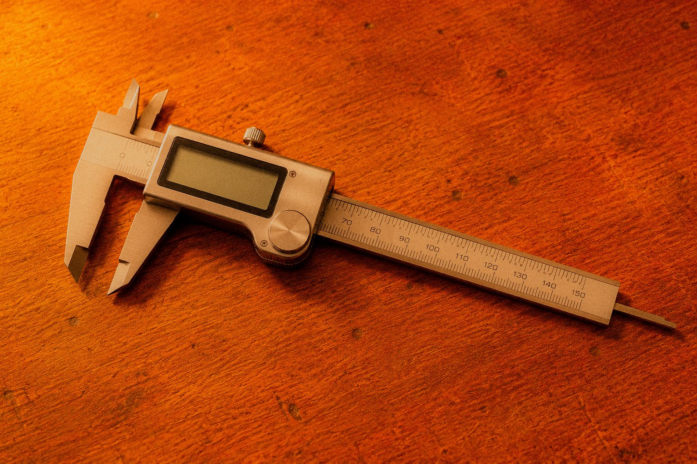
Medición
Calibre digital
Medición precisa de espesores y dimensiones.
ESC. 1:4 · f₀ 110 Hz
Trasteado
Martillo de trastes
Instalación precisa de los trastes.
ESC. 1:4 · f₀ 110 Hz
Barnizado
Muñequilla de barnizado
Aplicación tradicional del acabado en goma laca.
ESC. 1:4 · f₀ 110 Hz
07 / Experiencias reales
Salieron con una
Salieron con una
guitarra y un oficio.
08 / Sin riesgo
Tu inversión,
Tu inversión,
protegida.
100%
Garantía de primera clase. Si al finalizar el primer encuentro decidís no seguir, recuperás el 100% de tu inversión.
Sin límite
Terminás tu guitarra, garantizado. Si necesitás una clase más para ajustarla, la incluimos sin costo.
Flexible
Sin compromiso. Si necesitás hacer una pausa, conservás tu cupo y tu inversión.
09 / La inversión
Un legado que
Un legado que
se toca.
El valor no es el de un curso: es el de una guitarra de concierto de autor más el oficio para construir muchas más. Cupos estrictamente limitados por temporada.
Construcción de Guitarra Criolla
USD 750inversión total · 3 meses
6 cuotas sin interés
- 13 clases individuales con el maestro luthier
- Materiales master grade incluidos
- Uso completo del taller y herramientas
- Guitarra de concierto terminada para llevar
- Certificado de autor + sello de trazabilidad
- Garantía de primera clase (100% reembolsable)
- Cupo reservado con seña, saldo antes de la clase 01
Precio en USD, abonable en pesos al tipo de cambio del día
Medios de pago
10 / Preguntas frecuentes
Sin letra
Sin letra
chica.
No. El curso está pensado para empezar desde cero. Las herramientas, la solera y todos los materiales están incluidos y disponibles en el taller.
Sí. La guitarra de concierto que construís es tuya: te la llevás terminada, barnizada y encordada al finalizar el programa.
El programa no cierra hasta que tu instrumento esté completo. Si tu ritmo requiere una sesión de ajuste adicional, la coordinamos sin costo.
Estrictamente individuales. Cada encuentro es 1 a 1 con el maestro luthier, en el taller, a tu ritmo.
Dejás tus datos en el formulario y el taller se pone en contacto con vos para coordinar la entrevista inicial y el calendario. Los cupos por temporada son limitados.
11 / Reservá tu cupo
Construí la
Construí la
guitarra que hoy
solo imaginás.
Dejanos tus datos y el maestro luthier se pondrá en contacto con vos para agendar la entrevista inicial. Cupos limitados para la temporada en curso.
Inicio25/07/26
Horario16:00 a 19:0016-19 h
Día de cursadoJueves
¡Gracias! Tu solicitud quedó registrada. El maestro luthier se pondrá en contacto con vos para coordinar la entrevista inicial.